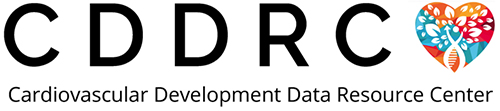

Shout-outs for the CDDRC Website
Barry Moore, 12 July 2022
As the CDDRC website comes alive we are happy to acknowledge the work of professional web designer Brett Thompson, owner of Pixelcrane for design of the site. Brett had previously designed the website for the Utah Center for Genetic Discovery and was familiar with our team and able to step right in to translate the vague ideas of a bunch of biologist and computer types into a vibrant design that we think reflects well on the CDDRC and our partners. Thanks Brett!
The design work by Brett was translated into HTML and CSS by our very own Anders Pitman. Anders set us up with Liquid HTML templates and an 11ty static website generation framework and packaged the entire site up for us on GitHub making updates to the website a breeze! If you have suggestions, find an issue or would like to contribute a blog post, don’t hesitate to log an issue or send us a pull request!
Also a big shout out to Chase Miller of Frameshift Genomics for coming up with the CDDRC Logo!
